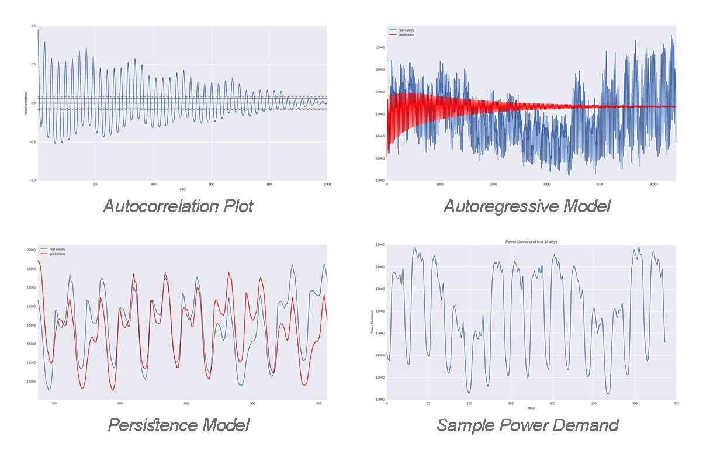
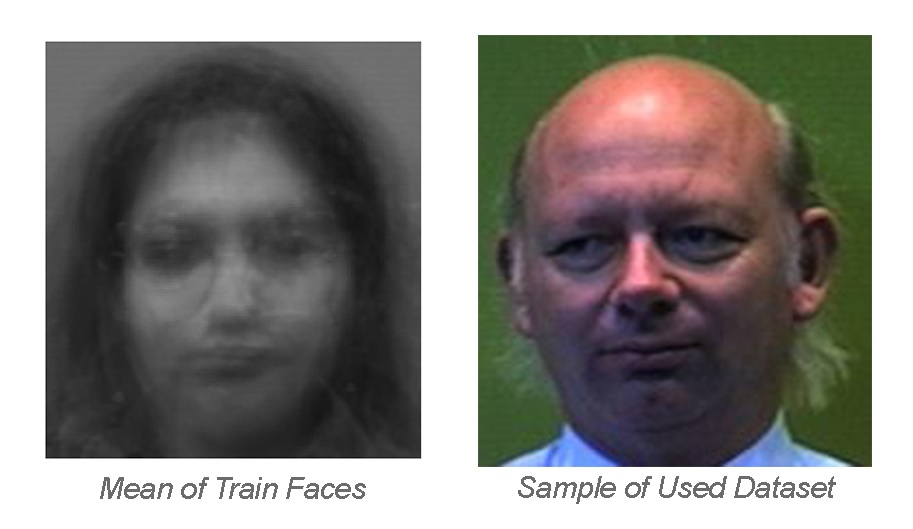

I'm an undergraduate student in CEIT department of AUT majoring in Computer Engineering. I'm interested in
applying Machine Learning methods on Computer Vision, Robotics and Biology problems. I'm also interested in
Computational Neuroscience and Cognitive Sciences on a broader horizon.
Currently, I'm working on three projects, A Novel System for Online Person Recognition of Home
Robots(Computer Vision), A Communication Node for ROS-Gazebo Simulation(Robotics) and Corresponding
ECoG, fMRI and EEG Signals in Human VTC in Royan Institue of Research collaborating with
Prof. Khaligh-Razavi from
MIT(Neuroscience, Deep Learning).
Brief explanations about my recent projects are
available below. Also, you can read more about me by clicking button below.
- Computer Vision
- Intelligent Robotics
- Statistical Machine Learning
- Cognitive Science
- Computational Neuroscience
- Bioinformatics
- Deep Learning
- Data Mining and Large Scale Data Analysis
- Game Theory, Mechanism Design
- Mathematical Optimization
Recent Work

Development of a Communication Node in ROS
CRLab and AIRLab Joint Project, July 2017-Present
Development of a communication node that interacts both with the ROS nodes of the robots and with a
simulator (Gazebo), in order to receive requests and uses various models of signal propagation to
decide if two robots can communicate or not.
Humanoid Robot Body Detection Using Deep Learning
CRLab and AIRLab Joint Project, July 2017-Present
We compare several two-stage detection systems based on various CNN's and highlight their
speed-accuracy trade off. The approach performs edge based image segmentation in order to reduce the
search space and then a CNN validates the detection in the second stage. Results were published in
RoboCup Symposium 2017 and
are available here.
Code and instructions
are available in Github.

Virtual Robot Rescue Simulation Base Code
CRLab and AIRLab Joint Project, July 2017-Present
Base code of SOSVR team for Virtual Robot Competition,
including behaviour, human detection,
navigation and bring-up packages. Base code version 2 is released later in spring 2017.
Codes for version 2 are available here: Github.
Find description paper here: paper.

Parametric and Non-Parametric Time Series Analysis for Power Usage Data
CRLab and AIRLab Joint Project, July 2017-Present
In this project,
our goal was to predict the power usage of Ontario state, Canada, using recorded usage data
from January 2002 to December 2016. We implemented parametric and non-parametric
approaches to Time Series Analysis and compared them with respect to various evaluation metrics.
Results are available in this
report.
Codes are available on Github.

Implementing and Evaluating Naive Bayes Model and PGM for Classification of Illness
CRLab and AIRLab Joint Project, July 2017-Present
In this project, we implemented probabilistic models on a data-set of heart
disease(UCI Heart Disease Data).
Pre-processing operations like discretizing continuous values and
filling missing values were done. 2 different PGM and 3 Bayesian Networks
using different subsets of data were used and evaluated.
Codes are available on Github.
Implementing and Analysing Linear Regression On a Data Set of Student Grades
CRLab and AIRLab Joint Project, July 2017-Present
In this project, We implemented Ridge and Lasso on 2 different data-sets. Various evaluation metrics
like RSS, R2, AIC and LOOCV were calculated and analyzed, on both train and test sets. Backward and
Forward
methods of Model Selection were examined and results were compared. were examined and results were
compared.
Codes are available on Github.

Face Recognition Using SVD
CRLab and AIRLab Joint Project, July 2017-Present
This project is an implementation of this
paper, a real-time face recognition system. The approach is essentially to apply the concepts of
vector space and subspace to face recognition

Credit Card Transaction Fraud Detection
CRLab and AIRLab Joint Project, July 2017-Present
This was a project done for a data mining contest. The goal was to
classify credit card transaction as fraud or non-fraud.
Codes are available on Github.
Publications and Technical Reports
-
Humanoid Robot Detection Using Deep Learning: A Speed-Accuracy Tradeoff
S.Mokhtarzadeh, M.Javadi, S.Azami, S.Sadeghnejad, S.Shiry, and J.Baltes
RoboCup Symposium 2017, Springer International Publishing,
(Link)
-
SOSVR Team Description Paper, RoboCup2017 Rescue Virtual
Robot League
M.TaherAhmadi, S.Azami, S.Shiry
International RoboCup Competition, August 2017, Nagoya.
(Link)
-
SOSVR Team Description Paper, RoboCup2016 Rescue Virtual
Robot League
M.TaherAhmadi, S.Azami, S.Shiry
International RoboCup Competition, July 2016, Leipzig.
(Link)
Technical Reports
-
Parametric and Non-Parametric Time Series Analysis for
Power Usage Data
S.Azami, M.TaherAhmadi
Technical Report for Statistical Machine Learning Course
(Link)
-
Grade Prediction and House Price Prediction and
Comparison
S.Azami
Technical Report for Data Mining Project
(Link)
-
Face Recognition Using Singular Value
Decomposition
S.Azami
Technical Report for Implementation of
(this)
paper.


{kind=link}
{kind=link}
{kind=link}
{kind=link}